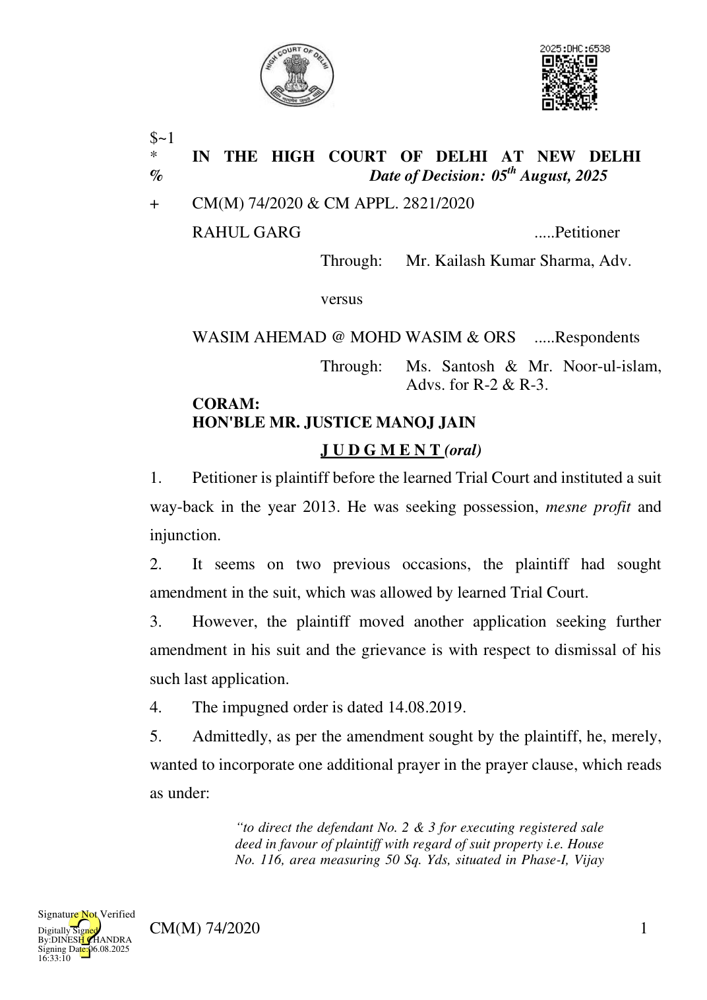

Vihar, Delhi-110085 bounded as EAST : other property, West: other property, NORTH : Gali 12 Ft Vide, SOUTH: other property and defendants be directed to hand over peaceful and vacant possession of the aforementioned suit property in favour of plaintiff by way of specific performance.”
- The case is still at a very nascent stage in the sense that the issues have yet not been framed.
- The defendants have also filed an application under Order VII Rule 11 CPC, which has not yet been decided by learned Trial Court.
- The prime reason for rejection of amendment request is that it changes the nature of the suit. The prime opposition coming from the side of defendant is that such relief of seeking specific performance has become time-barred and, therefore, it was, rightly, not allowed.
- Admittedly, though any such proposed amendment cannot cause any prejudice to the case of defendant, fact, however, remains that the amendment can be still permitted, while simultaneously leaving the aspect of limitation open so as to ensure that there is no unnecessary prejudice of any nature whatsoever to any of the parties. Reference be made to Ragu Thilak D. John v. S. Rayappan: (2001) 2 SCC 472 wherein it is held as under: “6. ...... the amendment sought could not be declined. The dominant purpose of allowing the amendment is to minimise the litigation. The plea that the relief sought by way of amendment was barred by time is arguable in the circumstances of the case, as is evident from the perusal of averments made in paras 8(a) to 8(f) of the plaint which were sought to be incorporated by way of amendment. We feel that in the circumstances of the case the plea of limitation being disputed could be made a subject-matter of the issue after allowing the amendment prayed for.”
- Learned counsel for petitioner/plaintiff submits that he would have no objection if the amendment is allowed with the abovesaid rider.
CM(M) 74/2020 2
- Learned counsel for respondents No.1 and learned counsel for respondents No.2 & 3 leave it to the Court to pass appropriate order in this regard.
- Keeping in view facts and circumstances of the case, the present petition is disposed of with direction that the amendment whereby petitioner is seeking incorporation of additional prayer, as extracted above, is permitted to be incorporated in the plaint. However, such amendment comes with condition that the learned Trial Court would frame a specific issue to the effect whether such relief of specific performance is barred by limitation or not.
- Needless to say, since the amendment is being allowed, the defendants would be at liberty to file fresh written statements to such amended plaint.
- The petition stands disposed of in aforesaid terms.
- Pending application also stands disposed of in aforesaid terms.
(MANOJ JAIN) JUDGE AUGUST 5, 2025/ck/js CM(M) 74/2020 3